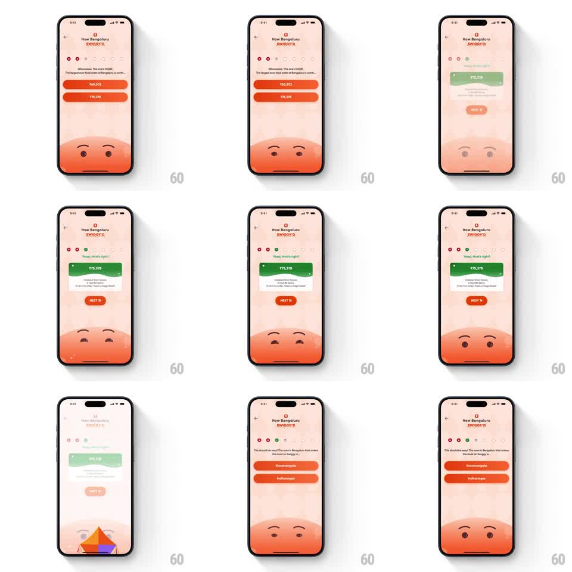

Media
Frame-by-frame

Rebuild this interaction 1:1: Swiggy's quiz correct-answer payoff - the tapped answer button flips green, grows into a fact card, the mascot beams, confetti falls, and the next question slides in.

Rebuild this interaction 1:1: Swiggy's quiz correct-answer payoff - the tapped answer button flips green, grows into a fact card, the mascot beams, confetti falls, and the next question slides in. ## Integration Integration: stack-agnostic spec - springs given as stiffness/damping, timed motions as duration + curve; map every value to your framework and animation library of choice. ## Scene A peach "How Bengaluru SWIGGY'D" quiz screen: a question with two orange answer buttons (₹60,303 / ₹75,378), progress dots at top, and a big round orange mascot face filling the lower half. On correct, the button turns green, expands into a fact card with the answer and a fun-fact line, a "NEXT >" button appears, and the mascot's eyes light up. ## Motion spec Pattern: answer-to-card morph with mascot reaction, gesture-driven, ~1.5s. - On tap, the chosen button flashes and fills green (200ms); the wrong option fades to 40%. - The green button morphs - height and radius animating - into a fact card (350ms, ease-out), the answer value and fact copy fading in as it grows. - Confetti sprinkles from the top (staggered pieces, 600ms fall, varied rotations). - The mascot's eyes open bright and it grins (150ms), and a "NEXT >" pill pops in (spring stiffness 400 damping 18). - On NEXT, the whole question stack slides left and out (300ms) while the next question slides in from the right, the mascot relaxing back to neutral. ## Calibration - The morph is one shape changing, not a button replaced by a card - keep the same green fill continuous. - Confetti is a light sprinkle, not a cannon - a dozen pieces. ## Reduced motion Button turns green, card fades in, no confetti. ## Don't miss - The progress dots fill green for correct answers. - The mascot is only a face rising from the bottom edge - its reaction reads through eyes and brows alone.